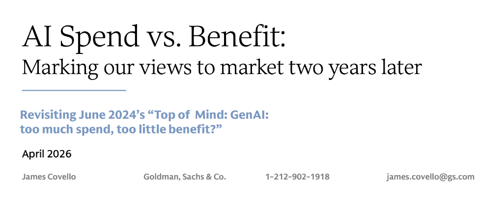
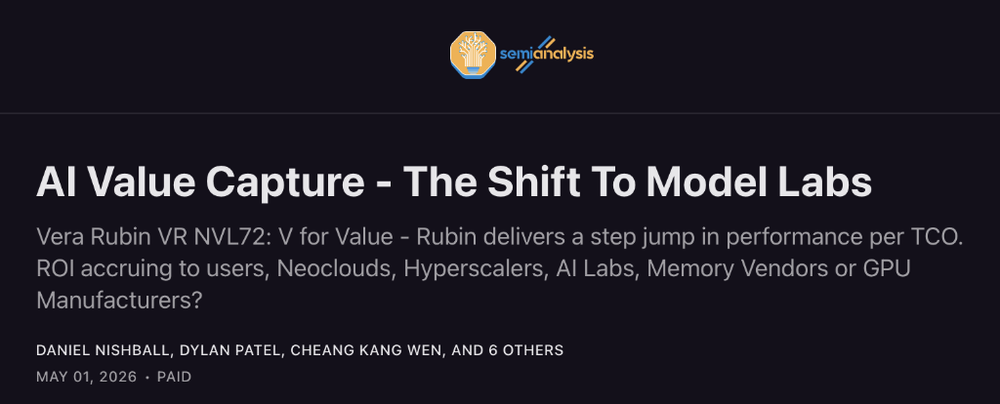
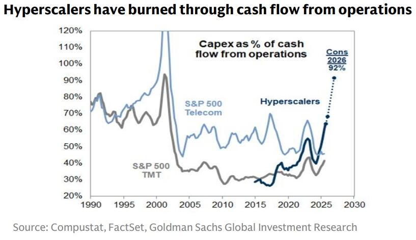
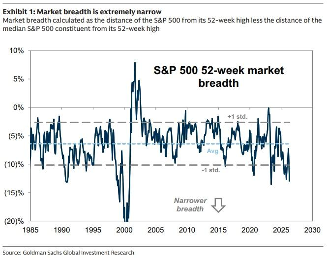
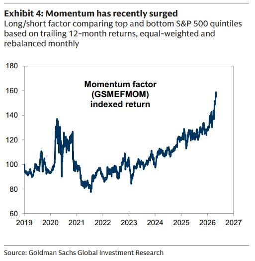
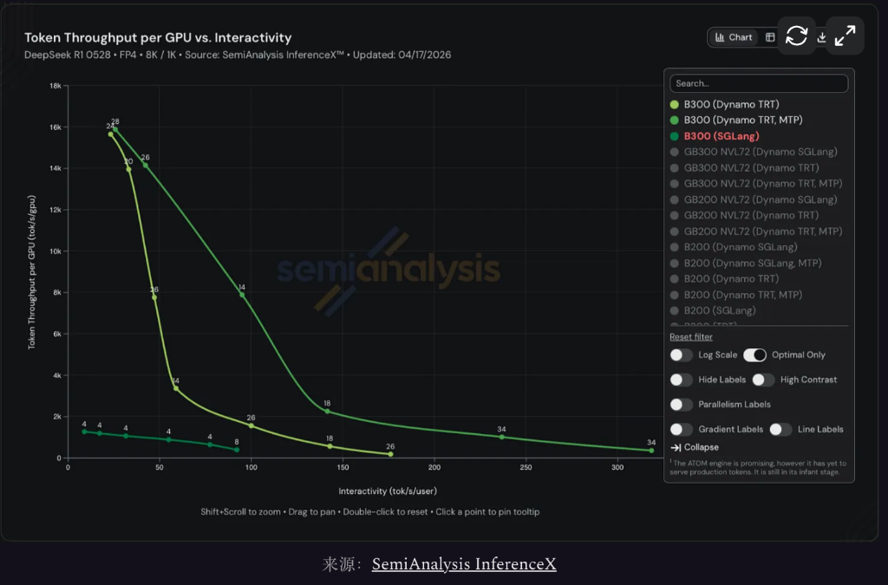
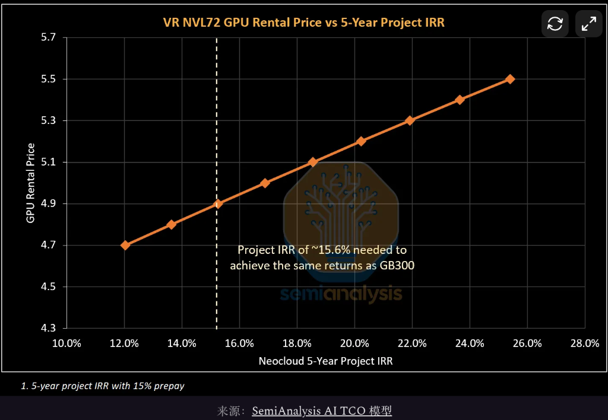

📈 “AI铲子”统治市场，下一个赢家是谁？高盛和SemiAnalysis激辩“核心分歧”
AI shovel narrative: Goldman vs SemiAnalysis on the core divide
过去两年，AI交易bargain[ˈbɑrgɪn] n. 廉价货；交易,契约,合同几乎统治了全球股票市场。
英伟达、半导体设备、HBM、先进封装、数据中心datacenter[ˈdeɪtəsentə] n. 数据中心、电力设备、变压器、制冷、燃气轮机，凡是能被放进AI基础设施链条里的资产，都被市场反复重估。
这个交易没有失效，反而涨到让投资者不得不重新面对confront[kənˈfrənt] v. 面对；遭遇；比较一个更难的问题：AI产业链第一阶段的赢家已经被市场奖励到极致，下一步还能继续涨吗？
高盛和SemiAnalysis的两份报告inform[ˌɪnˈfɔrm] v. (of,about)通知,告诉,报告，正好站在这个分岔口上。
高盛James Covello的判断偏冷：AI基础设施infrastructure[ˈɪnfrəstrʌktʃə] n. 基础设施；公共建设；下部构造第一阶段已经充分定价，芯片和“卖铲子”的链条拿走了太多确定利润，但企业端ROI仍然没有普遍跑通，云厂商的现金流压力也在上升。按照这套逻辑，接下来更好的相对交易，不是继续追逐半导体，而是看多超大规模hyperscale[ˈhaɪpəskeɪl] n. 超大规模云厂商、低配半导体。

SemiAnalysis给出的答案几乎相反：如果Agentic AI真的让token变成生产资料，模型实验室lab[læb] n. 实验室，研究室的毛利率开始改善，前沿模型仍然有定价权，那么AI基础设施并不是“涨够了”，而是还没有完全按照新一轮token价值重新定价。英伟达、台积电、内存、Neocloud、模型实验室laboratory[ləˈbɒrətri] n. 实验室， 研究室，都还有继续分走增量价值的理由。

这不是一场关于AI有没有前途的hopeful[ˈhoʊpfəl] adj. 有希望的；有前途的争论。
AI资本开支capex[ˈkeɪpeks] n. 资本开支还在上升，AI基础设施股也没有降温。真正的authentic[əˈθɛnɪk] adj. 真正的，真实的；可信的问题变成了：芯片层已经把第一轮利润留在账上，市场现在争的是这笔利润是否已经被充分定价；如果Agentic AI继续放大token价值，下一轮增量利润会继续留在硬件层，还是开始向模型实验室、云厂商和企业软件层重新分配allocate[ˈæləˌkeɪt] v. 分配，分派；拨给。
高盛盯的不是AI热不热，是这条路还没跑通
高盛这篇报告，其实不在absence[ˈæbsəns] n. 缺席，不在；缺乏，不存在于唱衰用户增长，也不是说技术不行，而是在提醒市场——AI，现在还没真正赚到钱。
Covello先承认acknowledge[ækˈnɑlɪʤ] v. 承认；答谢；报偿；告知已收到了两件事：消费者采用AI的速度比他们原先预期更快；云厂商即使股价承压，也没有像他们预想的那样削减axe[æks] v. 削减；用斧砍AI资本开支，反而继续提高投入。AI没有降温，资本开支也没有退潮ebb[ɛb] n. 衰退；退潮；衰落。
消费者用AI，很多还停留abide[əˈbaɪd] v. 忍受，容忍；停留；遵守在免费层。用户增长可以证明产品吸引力charm[ʧɑrm] n. 吸引力， 魅力，却不能直接支付GPU、数据中心、电力、网络和模型推理的账单。企业端才是AI经济能否闭环的关键：企业愿不愿意持续付费，能不能从AI里省下成本、增加收入、提高产出，决定整条链条能否长期承受absorb[əbˈzɔrb] v. 吸收；吸引；承受；理解；使…全神贯注今天的资本开支。
报告提到，企业在生成式AI上的投入已经很大，但大量组织apparatus[ˌæpərˈætəs] n. 器械，器具，仪器；机构，组织还没有拿到可验证的回报；同时，全球IT支出仍在上aboard[əˈbɔrd] prep. 在…上升，AI并没有在总量层面让企业技术预算降下来。对投资者来说，这意味着一个很现实的realistic[ˌriəˈlɪstɪk] adj. 现实的；现实主义的；逼真的；实在论的问题：企业在买AI、试AI、谈AI，但AI还没有普遍进入利润表。
这与AI基础设施establishment[ɪˈstæblɪʃmənt] n. 确立，制定；公司；设施链条的利润形成了鲜明反差。
芯片chip[ʧɪp] n. [电子] 芯片；筹码；碎片；(食物的) 小片; 薄片公司已经赚钱，存储、电力、数据中心相关公司被市场反复重估。云厂商则在另一端承担assumption[əˈsəmpʃən] n. 假定，设想；采取；承担资本开支。数据中心建设、GPU采购、电力接入、网络设备bite[baɪt] n. 咬；一口；咬伤；刺痛 abbr. 机内测试设备（Built-In Test Equipment）、服务器机架，这些支出都先落在云厂商账上。高盛报告称，超大规模云厂商已经消耗掉部分经营现金流富余，并开始通过approve[əˈpruv] v. 批准，通过；(of)赞成，赞许，同意债务支持数据中心建设，2025年数据中心债务发行额翻倍至1820亿美元。

这就是高盛眼里的不平衡。
正常半导体semiconductor[ˌsɛmɪkənˈdəktər] n. 半导体周期里，芯片公司赚大钱，通常说明客户也在扩张。客户赚钱，继续买芯片，芯片公司继续繁荣boom[bum] n. 繁荣；吊杆；隆隆声。AI这一轮更别扭：芯片链条利润最清楚clarity[ˈklærəti] n. 清楚，明晰；透明，客户层和应用层的回报还没有同样清楚。
所以，高盛的判断并不是“AI没用”，而是“现在的分账方式alike[əˈlaɪk] adv. 以同样的方式；类似于难以长期线性外推”。
半导体公司已经把第一阶段最确定ascertain[ˌæsərˈteɪn] v. 确定，查明，弄清的利润吃到嘴里。问题是，下游客户有没有足够利润，继续供养上游这么高的资本开支和利润集中concentrate[ˈkɑnsənˌtreɪt] v. 集中；浓缩；全神贯注；聚集度。
高盛的交易建议advise[ədˈvaɪz] v. 忠告，劝告，建议；通知，告知，其实押的是“均值回归”
高盛给出的交易建议看似反直觉：相对看多超大规模云厂商，低配半导体conductor[kənˈdəktər] n. 指挥；售票员；导体。
企业AI ROI开始commence[kəˈmɛns] v. 开始兑现。企业证明certify[ˈsərtəˌfaɪ] v. 证明，证实；发证书(或执照)给AI能带来收入、效率和成本优势，市场就会重新理解云厂商的资本开支。过去被认为拖累自由现金流的投入，会重新变成未来收入和平台控制clutch[kləʧ] n. 离合器；控制；手；紧急关头力。云厂商估值修复，半导体也会受益，但由于半导体此前已经被市场奖励很多lump[ləmp] n. 块，块状；肿块；瘤；很多；笨人，相对弹性未必更大。
企业ROI继续困难difficulty[ˈdɪfɪˌkəlti] n. 困难；困境；难题。云厂商在现金流压力和投资者压力下削减资本开支，市场会奖励更好的preferable[ˈprɛfərəbəl] adj. 更好的，更可取的；更合意的现金流纪律。半导体链条则要面对订单预期expectation[ˌekspekˈteɪʃn] n. 预期；期望,指望下修。
高盛认为deem[dim] v. 认为，视作；相信，这两条路径都支持“云厂商相对半导体更好”。真正让这笔交易失败的情形，是第三条路径：企业ROI仍然模糊，云厂商却继续不计成本加码，半导体继续吃掉产业链绝大部分bulk[bəlk] n. 体积，容量；大多数，大部分；大块利润。
这恰恰是过去两年市场最熟悉的状态shatter[ˈʃætər] n. 碎片；乱七八糟的状态。
也正因为如此，高盛报告的矛头不是AI技术technique[tɛkˈnik] n. 技巧，手艺，工艺；技能，技术，而是市场定价。AI基础设施的好处已经被交易transaction[trænˈzækʃən] n. 交易,事务；办理,处理；(pl.)会报,学报得很充分，云厂商的坏处也被交易得很充分。下一步，市场要看这两个方向orientation[ˌɔriɛnˈteɪʃən] n. 方向；定向；适应；情况介绍；向东方是否反转。


SemiAnalysis从完全不同的diverse[dɪˈvərs] adj. 多种多样的,不同的入口切入。
它并不否认contradiction[ˌkɑntrəˈdɪkʃən] n. 矛盾，不一致；反驳，否认2023年至2025年，AI价值主要流向基础设施。英伟达、电力electricity[ɪˌlɛkˈtrɪsəti] n. 电力；电流；强烈的紧张情绪、数据中心、存储，确实是第一阶段的大赢家。模型公司和推理服务商在早期并不舒服，很多AI产品看起来只是一个更好的搜索hunt[hənt] v. 打猎； 猎取；搜索； 寻找框，毛利率也远谈不上漂亮。
但SemiAnalysis认为，2025年底以后，事情affair[əˈfɛr] n. 事情；事务；私事；（尤指关系不长久的）风流韵事发生了变化。
变化variation[ˌvɛriˈeɪʃən] n. 变化；[生物] 变异，变种来自Agentic AI。
过去的depart[dɪˈpɑrt] adj. 过去的,逝世的token更像“问答成本”。用户问一句，模型答一句。它能节省时间，但价值边界boundary[ˈbaʊndəri] n. 边界；范围；分界线有限。现在的token开始进入复杂工作流：写代码、做财务模型、生成仪表盘、分析analyze[ˈænəˌlaɪz] vt. 分析； 分解财报、整理数据、制作图表。
SemiAnalysis用自己的公司做例子。它们的分析师已经每天用agent处理研究和建模工作，过去这些任务assignment[əˈsaɪnmənt] n. 任务；作业要么需要初级分析师花很多小时，要么根本没有时间排进工作流。文章披露，SemiAnalysis在Anthropic Claude上的年化token支出一度达到1095万美元，token支出约相当于correspond[ˌkɔrəˈspɑnd] vi. 通信；符合， 一致；相当于， 对应员工薪酬的30%。
这组数字未必能代表ambassador[æmˈbæsədər] n. 大使；特使，(派驻国际组织的)代表所有企业，但它代表了一类边际用户的变化。
对普通消费consume[kənˈsum] v. 消耗；消费；吃；喝者来说，AI订阅可能只是每月几十美元的工具。对高强度知识工作者来说，token开始变成生产资料feedback[ˈfidˌbæk] n. 反馈；成果，资料；回复。
几美元、几十美元的token，换来的不只是几段文字，而是模型、图表、代码、数据清洗、财报分析，甚至是过去根本不会被执行administer[ədˈmɪnɪstər] v. 管理；执行；给予的工作。用户看待AI成本的方式也会随之变化：他们不再只问“每百万token多少钱”，而会问“这些token替代了多少人工，增加augment[ɔgˈmɛnt] v. 增加；增大了多少产出”。
这就是SemiAnalysis与高盛分歧gap[ɡæp] n. 间隙；缺口；差距；分歧的起点。
高盛看到的是平均企业的ROI还不清mist[mɪst] n. 薄雾；视线模糊不清；模糊不清之物楚。SemiAnalysis看到的是最强用户已经开始大量消耗consumption[kənˈsʌmpʃn] n. 消费(量),消耗token，而且愿意为更强模型付费。

模型实验experiment[ɪkˈspɛrəmənt] n. 实验，试验；尝试室为什么突然变得重要
SemiAnalysis的第二个关键判断，是模型实验室的单位经济性正在改善amend[əˈmɛnd] v. 修改；改善，改进。
此前，模型公司被认为esteem[ɛˈstim] v. 尊敬；认为；考虑；估价夹在芯片和云厂商之间。收入增长很快，但训练和推理成本costing[ˈkɒstɪŋ] n. 成本更快。用户越多，成本越高。模型越强，资本开支越重。这个模式看起来像高增长、低毛利、高烧钱。
Agentic AI改变alter[ˈɔltər] v. 改变，更改了这张表。
价格端，前沿模型能执行enforce[ɛnˈfɔrs] v. 实施，执行；强迫，强制更高价值的任务，用户愿意为更强模型付溢价。
成本端，硬件迭代、推理优化、缓存机制和软件工程持续降低decrease[ˈdiˌkris] v. 减少,变少,降低单位token成本。
产品端，模型公司可以通过更高端SKU、更快响应、更强推理能力capability[ˌkeɪpəˈbɪləti] n. 能力，做出分层定价。
SemiAnalysis提到，在B300运行DeepSeek的案例中，不同differ[ˈdɪfər] v. 使…相异；使…不同软件优化组合可以让同一硬件吞吐量从约1000、8000提高到约14000 tokens/秒/GPU。叠加硬件升级，最优化的GB300 NVL72配置相对oppose[əˈpoʊz] v. 反对,使对立,使对抗,使相对H100在FP8下吞吐量约高17倍；如果切到Hopper原生不支持的sympathetic[ˌsɪmpəˈθɛtɪk] adj. 有同情心的；赞同的，支持的FP4，差距可达32倍，而每GPU总拥有成本只高约70%。

这意味着spell[spɛl] v. 拼，拼写；意味着；招致；拼成；迷住；轮值，模型实验室一边可以提高token创造的经济价值，一边可以降低token生产成本。
SemiAnalysis称，Anthropic ARR从90亿美元升至440亿美元以上，推理inference[ˈɪnfərəns] n. 推理；推论；推断基础设施毛利率从38%升至70%以上。即便模型标价下降，高端模型使用占比提升、缓存命中率提高、硬件效率改善，也可能推动boost[bust] n. 推动；帮助；宣扬毛利率继续扩张。
如果这一判断diagnose[ˌdaɪəgˈnoʊs] v. 诊断(疾病)；判断(问题)成立，AI产业链的第二阶段就不再只是“芯片继续赢”或“云厂商反弹”。
模型实验室会从烧钱层，变成新的价值捕获acquire[əkˈwaɪər] v. 获得；取得；学到；捕获层。
高盛和SemiAnalysis表面上在争AI ROI，实际争的是哪个样本更能代表behalf[bɪˈhæf] n. 代表；利益未来。
这些企业有复杂的complicated[ˈkɑmpləˌkeɪtəd] adj. 难懂的，复杂的数据系统、历史IT包袱、权限管理、合规要求、审批流程。很多公司为了向市场和董事会交代AI战略，先做聊天机器人robot[ˈrəʊbɒt] n. 机器人；遥控设备，自动机械；机械般工作的人、内部助手、试点项目。花钱是真的，但业务流程未必改变convert[ˈkɑnvərt] v. 变换,转换；改变（信仰等）。流程不改，ROI就很难进财报。
这就是高盛强调accent[ˈækˌsɛnt] n. 口音；重音；强调；特点；重音符号数据结构和编排层的原因。
一个零售企业如果没有打通库存、客户画像和推荐commend[kəˈmɛnd] v. 推荐；称赞；把…委托系统，AI客服可能推荐一个缺货商品。一个企业如果没有模型路由层，简单查询也交给最贵的前沿frontier[frənˈtɪr] n. 前沿；边界；国境模型，成本自然失控。AI落地卡住的地方，已经不只是模型不够强，而是企业还没有准备好让模型进入entrance[ˈɛntrəns] n. 入口；进入业务系统。
SemiAnalysis看的是边际用户。
研究、代码、建模、图表、财报分析，这些任务天然适合adjust[əˈʤəst] v. 调整，使…适合；校准agent。它们高度altitude[ˈæltɪtjuːd] n. 高度， 海拔文本化、数字化、结构化，结果容易评估，用户也有能力把AI嵌入工作流。这样的组织，会比普通企业更早看到ROI，也更愿意加大token消费expense[ɪkˈspɛns] n. 花费,消费,消耗。
资本市场要判断的，是这种领先样本会不会扩散diffuse[dɪfˈjuz] v. 扩散；传播。
如果SemiAnalysis看到的只是少数超级用户的异常值，高盛框架framework[ˈfreɪmˌwərk] n. 框架，骨架；结构，构架会占上风。AI资本开支会越来越受现金流约束，半导体链条需要消化高预期，云厂商可能因为支出纪律和估值压缩获得acquisition[ˌækwɪˈzɪʃn] n. 获得物，获得；收购相对回报。
如果SemiAnalysis看到的是扩散前夜的overnight[ˈoʊvərˈnaɪt] adj. 晚上的；通宵的；前夜的领先指标，市场就不能用平均企业今天的低ROI否定AI链条。Agentic AI一旦进入更多白领工作流，token需求、模型收入、云收入和硬件需求会一起上升arise[əraɪz] v. 出现；上升；起立。
这个判断，比“看多AI还是看空AI”更重要magnitude[ˈmægnəˌtud] n. 大小；量级；[地震] 震级；重要；光度。市场交易的liable[ˈlaɪəbəl] adj. 有责任的，有义务的；应受罚的；有…倾向的；易…的从来不是静态平均数，而是边际变化能不能变成主流。
高盛和SemiAnalysis最大的资本市场分歧gulf[ɡʌlf] n. 海湾；深渊；分歧；漩涡，最终落在英伟达和半导体链条上。
高盛的视角很直接：半导体已经拿走了第一阶段最大、最确定confirm[kənˈfərm] v. 确认；确定；证实；批准；使巩固的利润。市场把“卖铲子”逻辑打进价格以后afterward[ˈæftərwərd] adv. 以后，后来，风险回报开始变差。只要云厂商资本开支松动，半导体链条就会面对估值和订单的双重压力。
SemiAnalysis则认为，英伟达和台积电控制curb[kərb] n. 路边；控制，约束了AI时代最稀缺的资源，却还没有完全按价值定价。
文章提到，内存价格过去一年上涨约6倍，Neocloud一年期H100租赁合同compact[ˈkɑmpækt] n. 合同，契约；小粉盒价格较2025年10月低点上涨约40%。与此同时meantime[ˈminˌtaɪm] adv. 同时；其间，英伟达和台积电并没有像下游token价值那样快速重新定价。
SemiAnalysis把英伟达称为AI生态ecosystem[ˈiːkəʊsɪstəm] n. 生态的“央行”。
这个比喻很贴切。英伟达控制的是算力computing[ˈkɒmpjuːtɪŋ] n. 算力流动性。它有能力涨价，但不能把整个altogether[ˌɔltəˈgɛðər] n. 整个；裸体系统抽干。价格提得太狠，会刺激客户加速accelerate[ækˈsɛlərˌeɪt] v. 使加速，使增速，促进；加速转向自研ASIC、TPU、Trainium，也会带来监管压力。台积电也类似analogy[əˈnæləʤi] n. 类似，相似，类比，类推。先进节点极度稀缺，但它长期重视客户关系bearing[ˈbɛrɪŋ] n. [机] 轴承；关系；方位；举止和生态稳定，不会在景气上行期把所有稀缺性一次性变现。
Rubin VR NVL72是SemiAnalysis判断verdict[ˈvərdɪkt] n. (陪审团的)裁决,判决；判断；定论英伟达仍有定价权的重要依据。按照其模型，Neocloud要让VR NVL72项目达到accomplish[əˈkɑmplɪʃ] v. 完成；实现；达到类似GB300项目的15.6% IRR，租金约需4.92美元/小时/GPU；如果按照GB300的每PFLOP租赁价格平价推算，VR NVL72理论天花板ceiling[ˈsilɪŋ] n. 天花板；上限约为12.25美元/小时/GPU；即便采用更保守的0.55美元/PFLOP，也对应约9.63美元/小时/GPU，接近approximate[əˈprɑksəˌmeɪt] v. (to)接近成本定价门槛的两倍。

这里的含义很清楚：只要下游token价值继续上升，英伟达的新系统仍有提价空间，Neocloud仍可能赚钱，终端用户仍可能接受acceptance[əkˈsɛptəns] n. 正式接受；接纳；接受，赞同，赞成，认可。
高盛和SemiAnalysis的分歧由此thereof[ˌðɛˈrəv] adv. 由此， 因此变得锋利。
高盛认为，半导体独赚不可持续persist[pərˈsɪst] v. 坚持；执意；继续存在[发生]；持续，因为下游还没有足够利润。SemiAnalysis认为，下游利润池正在变大，所以consequently[ˈkɑnsəkˌwɛntli] adv. 结果，因此，所以硬件层不是赚太多，而是还没有完全按照价值收费。
判断胜负的变量只有一个：AI创造coin[kɔɪn] v. 铸造（货币）；杜撰，创造的新利润池，能不能大到同时养活模型实验室、云厂商、Neocloud、英伟达、台积电、存储和电力链。
蛋糕继续pursue[pərˈsu] v. 继续；从事；追赶；纠缠变大，SemiAnalysis赢。
云厂商是这场争论中最尴尬的awkward[ˈɔkwərd] adj. 尴尬的；笨拙的；棘手的；不合适的一层。
它们既是资本开支最大买单者，也是AI需求最可能likelihood[ˈlaɪkliˌhʊd] n. 可能性，可能变现的平台。它们被英伟达、存储、电力链挤压，也拥有企业客户correspondent[ˌkɔrəˈspɑndənt] n. 通讯记者；客户；通信者；代理商行、云服务、模型API、自研芯片和软件生态。
高盛看多云厂商，是因为市场已经把很多ton[tən] n. 吨；很多，大量坏处打进去了。资本开支压制extinguish[ɪkˈstɪŋgwɪʃ] v. 熄灭；压制；偿清自由现金流，投资者质疑AI ROI，估值承压。后面只要出现两种情况circumstance[ˈsərkəmˌstæns] n. 情况，情形之一，云厂商都有修复路径：企业AI收入兑现，或者资本开支收缩。
SemiAnalysis则从需求侧看云厂商。只要token需求继续扩张，模型实验室和企业客户就需要entail[ɛnˈteɪl] v. 使需要，必需；承担；遗传给；蕴含更多算力。算力受到先进制程、内存、电力、机架级系统限制confine[kənˈfaɪn] v. 限制；使不外出，禁闭。买方最担心的fearful[ˈfɪrfəl] adj. 可怕的；担心的；严重的不是贵，而是拿不到。
所以云厂商不是单纯受害者，也不是自动auto[ˈɔtoʊ] n. 汽车（等于automobile）；自动赢家。
它们必须用财报证明manifest[ˈmænəˌfɛst] v. 表明,证明,显示，AI资本开支可以转成收入、利润和客户粘性。云业务增长是否重新加速，AI收入披露是否更清晰，推理利用率能不能提高，自研芯片能否降低对英伟达依赖，企业客户是否从试点转向长期部署array[əreɪ] v. 排列，部署；打扮，自由现金流有没有稳定下来，这些指标都会比过去更重要。
这些指标改善，高盛的相对看多云厂商逻辑会增强amplify[ˈæmpləˌfaɪ] v. 放大，扩大；增强；详述。
这些指标迟迟不改善mend[mɛnd] v. 修理，修补；改善；修改，云厂商仍然像夹在英伟达和企业客户之间的资本开支承压层。
软件层决定ROI能不能从样本specimen[ˈspɛsəmən] n. 标本,样本变成平均数
高盛报告里对“数据结构”和“编排层”的强调emphasis[ˈɛmfəsɪs] n. 重点；强调；加强语气，可能是最接近企业现实的一部分。
企业AI不会永远停留在员工打开聊天chin[ʧɪn] n. 下巴；聊天；引体向上动作框提问。真正有财务影响consequence[ˈkɑnsəkwəns] n. 结果,后果,影响的AI，要进入客服、销售、财务、采购、研发、风控、供应链、IT运维。每个流程都有数据、权限、合规、审批、历史系统和责任burden[ˈbərdən] n. 负担；责任；船的载货量边界。
模型再强，也不能绕过这些东西clay[kleɪ] n. [土壤] 粘土；泥土；肉体；似黏土的东西。
这就是企业软件层重新变得重要的crucial[ˈkruːʃl] adj. 重要的；决定性的；定局的；决断的地方。低风险、高频highfrequency[haɪˈfriːkwənsi] adj. 高频任务可以交给轻量模型或开源模型；高风险、高价值任务才需要imperative[ˌɪmˈpɛrətɪv] n. 必要的事；命令；需要；规则；[语]祈使语气前沿模型。中间bosom[ˈbʊzəm] n. 胸；胸怀；中间；胸襟；内心；乳房；内部需要一层系统判断任务类型、调用数据、控制权限、选择模型、监控成本、回写结果。
传统SaaS公司的优势，是行业经验、客户关系、数据入口和工作流沉淀deposit[dɪˈpɑzət] v. 存放；使沉淀。劣势是技术债和迭代速度pace[peɪs] n. 一步；步速；步伐；速度。
AI原生公司的优势，是产品速度、模型调用能力faculty[ˈfækəlti] n. 科，系；能力；全体教员和成本结构。劣势是缺少企业入口inlet[ˈɪnˌlɛt] n. 入口，进口；插入物；水湾和行业上下文。
前沿模型公司的优势superiority[ˌsupɪriˈɔrɪti] n. 优越，优势；优越性，是最强智能。劣势是缺少企业流程控制dam[dæm] v. 控制；筑坝权。
软件层不会简单simplicity[sɪmˈplɪsɪti] n. 简单,简易;朴素;直率,单纯被AI吃掉。没有数据和流程控制dominate[ˈdɑməˌneɪt] v. 支配,统治,控制权的软件公司，可能被模型抽象掉。掌握fist[fɪst] n. 拳，拳头；〈口〉笔迹；掌握；[印]指标参见号数据结构、工作流和模型路由的软件公司，反而有机会把AI变成更大的市场，从卖座席变成卖生产力。
企业ROI能不能从SemiAnalysis这样的强用户样本扩散到普通企业，很大程度上取决于depend[dɪˈpɛnd] v. 依赖，依靠；取决于；相信，信赖这一层。
AI交易过去问的是：谁最靠近算力？
下一阶段，市场会追问更细的变量variable[ˈvɛriəbəl] n. [数] 变量；可变物，可变因素。
第一，token价值是否继续上升ascend[əˈsɛnd] v. 上升；登高；追溯。Agentic AI如果从代码、研究enquiry[ɪnkˈwaɪˌri] n. 打听， 询问；调查， 研究、分析扩散到更多白领工作流，模型实验室和推理链会继续重估。
第二，模型实验室毛利是否继续改善。收入增长已经不够，市场会看推理成本、缓存效率efficiency[ɪˈfɪʃnsi] n. 效率；功效、SKU升级和前沿模型定价权。
第三，云厂商能否把资本开支转成收入proceed[pərˈsid] n. 收入，获利。AI capex本身不再自动算利好，只有能进入云收入、推理毛利和企业合约的capex，才会被市场奖励reward[rɪˈwɔrd] v. [劳经] 奖励；奖赏。
第四，英伟达能否继续从系统级瓶颈bottleneck[ˈbɒtlnek] n. 瓶颈涨价。GPU只是第一层，Rubin、SOCAMM、网络、机架级系统、软件栈和供应furnish[ˈfərnɪʃ] v. 供应,提供；装备,布置链采购能力，决定英伟达能不能继续抽成。
第五，台积电和存储能否重新定价稀缺。先进节点、HBM、DRAM、SOCAMM和先进封装，如果继续成为供给瓶颈，价值不会轻易离开departure[dɪˈpɑrʧər] n. 离开,起程上游。
第六，企业软件能否拿到AI落地入口threshold[ˈθreʃhəʊld] n. 入口；门槛；开始；极限；临界值。没有流程入口的软件公司会被压缩capsule[ˈkæpsəl] v. 压缩；简述，有入口、有数据、有编排能力的软件公司可能变得更贵。
AI基础设施交易没有失效lapse[læps] vi. 终止， 失效；陷入…状态。
它涨得太猛，才逼出了高盛和SemiAnalysis这场分歧。
高盛提醒remind[riˈmaɪnd] v. 提醒；使想起市场，芯片链的好处已经被打得很满。如果企业ROI迟迟不来，云厂商现金流会反噬资本开支，半导体独赚的格局landscape[ˈlændskeɪp] n. 格局会被修正。
SemiAnalysis提醒warn[wɔrn] v. 警告，提醒；通知市场，不能用2024年的AI体验判断2026年的Agentic AI。token正在变成生产资料，模型实验室开始inaugurate[ˌɪˈnɔgjəˌreɪt] vt. 开始， 开展；为…举行就职典礼， 使正式就任；为…举行开幕式， 为…举行落成仪式改善毛利，算力供给仍然紧张，英伟达和台积电可能还没有完全按照价值定价。
这两种判断放在一起，AI交易的重心已经变化vary[ˈvɛri] v. 变化；变异；违反。
过去两年，市场奖励的是稀缺资产asset[ˈæˌsɛt] n. 资产， 财产；优点； 有用的东西。接下来descend[dɪˈsɛnd] v. 下降；下去；下来；遗传；屈尊，市场要看谁能把AI创造的经济价值持续留在利润表里。
如果SemiAnalysis看到的是边际拐点，AI链条的蛋糕会继续变大，模型实验室、云厂商、英伟达、台积电、存储和电力链都有继续分账的理由allege[əˈlɛʤ] v. 宣称，断言；提出…作为理由。
如果高盛看到的是更接近平均企业的现实，资本开支会先撞上现金流，半导体链条需要消化assimilate[əˈsɪməˌleɪt] v. 吸收，消化；被吸收；被同化过高预期，云厂商反而因为估值压缩和潜在支出纪律获得更好的相对回报。
现在最可能的feasible[ˈfiːzəbl] adj. 可行的；可能的；可实行的状态，介于两者之间。
最强用户已经开始initiate[ˌɪˈnɪʃiˌeɪt] v. 开始，创始；发起；使初步了解猛买token，普通企业还没算清账。资本市场会先交易最强用户带来的边际变化，再等平均企业用财报验证validate[ˈvælɪdeɪt] v. 验证。验证verification[ˌverɪfɪˈkeɪʃn] n. 验证越快，SemiAnalysis的世界越近；验证越慢，高盛的交易越有胜率。
AI“铲子”仍然统治市场，但问题已经从“谁卖铲子”变成了另一张账本：谁已经赚够了，谁还能继续涨价，谁会成为下一层真正的genuine[ˈʤɛnjuˌaɪn] adj. 真正的收租人。